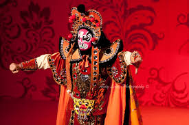
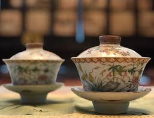
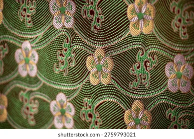
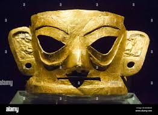

A stunning Sichuan opera skill – masks change in the blink of an eye. See it at Jinjiang Theatre or Shu Feng Ya Yun.

Half of Chengdu life happens in teahouses. He Ming Teahouse at People’s Park – bamboo chairs, a bowl of tea, and ear cleaning.

Over 2,000 years old, Shu brocade is one of China’s four famous brocades. Visit the Shu Brocade Museum.

The Golden Sun Bird ornament was unearthed here, pushing Chengdu’s history back 3,000 years.